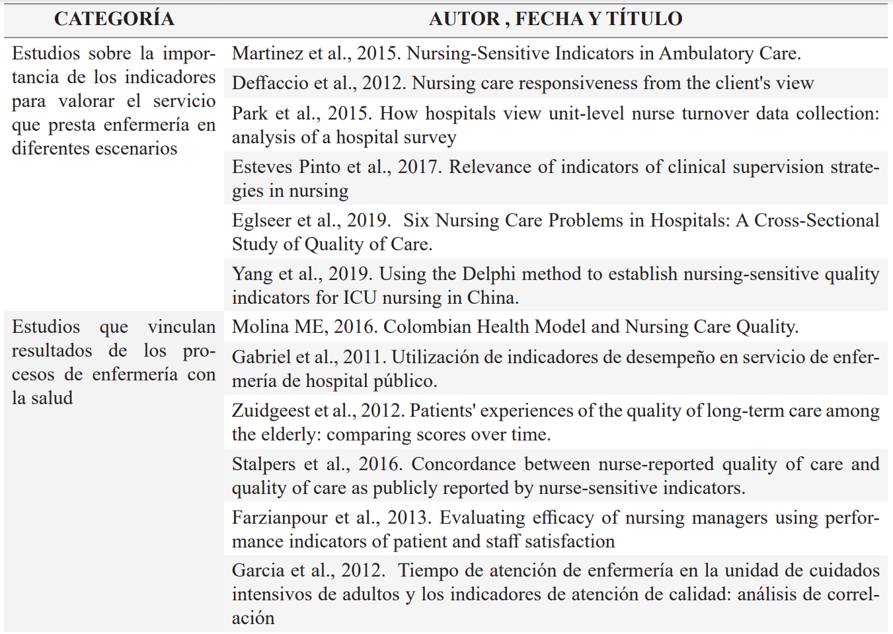
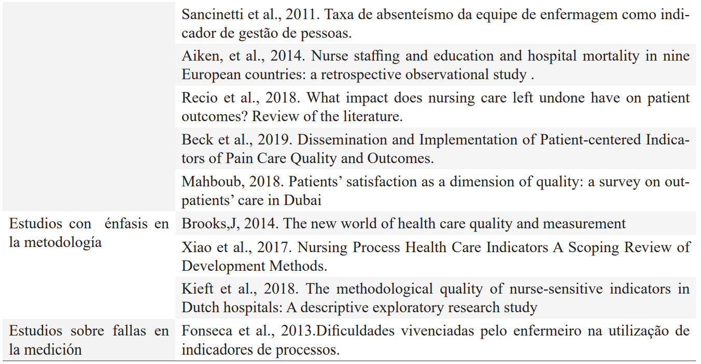
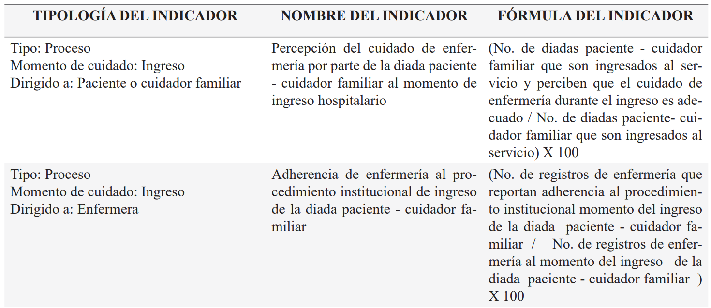
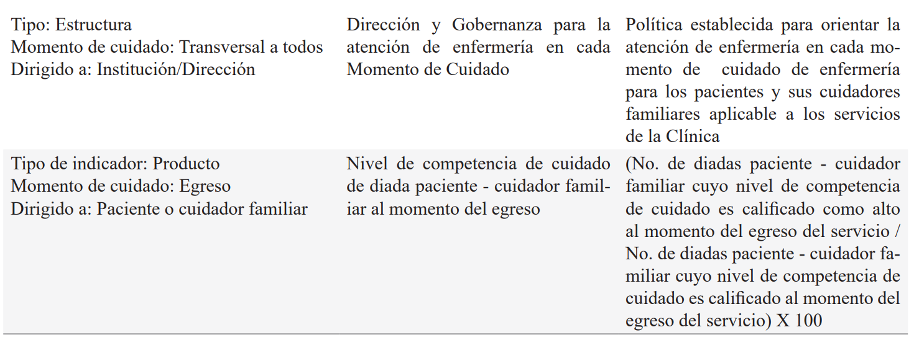
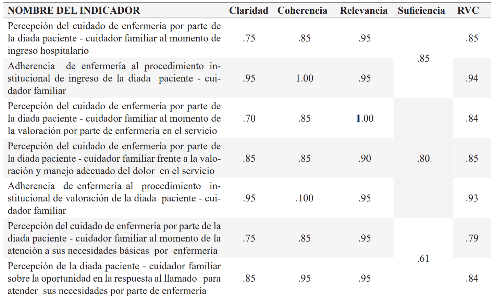
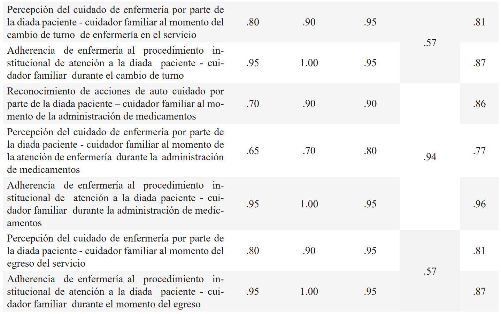
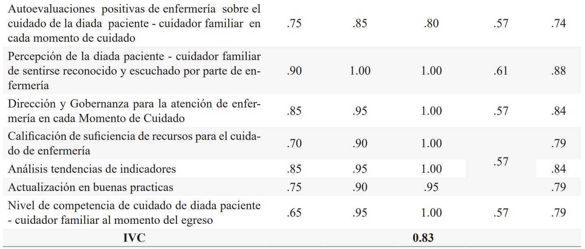

ISSN-PRINT 1794-9831 / E-ISSN 2322-7028
Vol. 20 Nº 1 / ene - abr 2023 / Cúcuta, Colombia.
ISSN-PRINT 1794-9831 / E-ISSN 2322-7028
Vol. 20 Nº 1 / ene - abr 2023 / Cúcuta, Colombia.
Resumen
Objetivo: Diseñar y validar indicadores de cuidado de enfermería a partir de la orientación de un modelo de práctica profesional en un hospital universitario de Colombia, 2018 – 2021. Material y Método: Este es un estudio cuantitativo bajo el abordaje de investigación denominado “Investigación metodológica en enfermería” desarrollado en cinco fases que incluyen: 1) revisión de los procesos de calidad institucional; 2) revisión de literatura sobre indicadores hospitalarios de enfermería; 3) Propuesta de indicadores con orientación del modelo institucional de práctica profesional de enfermería; 4) Validación de los indicadores mediante criterio de expertos; 5) Evaluación de la efectividad preliminar en campo durante 8 meses. Resultados: A partir de las tres primeras fases del estudio se plantean veintiún indicadores de cuidado de enfermería que responden al interés institucional y a la mejor evidencia disponible. Su validación refleja alta comprensibilidad y validez facial, una razón de validez de contenido (RVC) entre .74 y .96, y un índice de validez de contenido (IVC) de 0.83. Conclusión: Los indicadores de cuidado de enfermería diseñados bajo la orientación de un modelo de práctica profesional y validados mediante el criterio de expertos, mostraron una efectividad preliminar positiva para medir y mejorar los procesos y resultado del cuidado de enfermería de acuerdo con las personas implicadas en la recepción y suministro de dicho cuidado. Estos indicadores pueden ser empleados en hospitales con plataformas estratégicas similares.
Palabras Claves: Investigación metodológica en enfermería; Indicadores de Calidad de la Atención de Salud; Teoría de enfermería; Investigación en administración de enfermería; Atención de enfermería.
Abstract
Objective: To design and validate nursing care indicators based on the orientation of a professional practice model in a university hospital in Colombia, 2018 - 2021. Method: This is a quantitative study under the research approach called "Methodological research in nursing" developed in five phases that include: 1) review of institutional quality processes; 2) review of literature on hospital nursing indicators; 3) proposal of indicators with orientation of the institutional model of professional nursing practice; 4) validation of the indicators through expert criteria; 5) evaluation of preliminary effectiveness in the field during 8 months. Results: From the first three phases of the study, twenty-one nursing care indicators were proposed that respond to institutional interest and to the best available evidence. Their validation reflects high comprehensibility and face validity, a content validity ratio (CVR) between .74 and .96, and a content validity index (CVI) of .83. Conclusion: The nursing care indicators designed under the guidance of a professional practice model and validated through expert judgment showed positive preliminary effectiveness in measuring and improving the processes and outcome of nursing care according to the persons involved in receiving and providing nursing care. These indicators can be employed in hospitals with similar strategic platforms.
KeyWords: Nursing Methodology Research; Indicators of Health Services Quality Indicators, Health Care; Nursing Theory; Nursing administration Research. Nursing Care.
Resumo
Objectivo: Conceber e validar indicadores de cuidados de enfermagem com base na orientação de um modelo de prática profissional num hospital universitário na Colômbia, 2018 - 2021. Método: Este é um estudo quantitativo no âmbito da abordagem de investigação denominada "Pesquisa metodológica em enfermagem" desenvolvido em cinco fases que incluem: 1) revisão dos processos de qualidade institucional; 2) revisão da literatura sobre indicadores de enfermagem hospitalar; 3) proposta de indicadores com orientação do modelo institucional de prática profissional de enfermagem; 4) validação dos indicadores através de critérios de peritos; 5) avaliação da eficácia preliminar no terreno durante 8 meses. Resultados: A partir das três primeiras fases do estudo, são propostos vinte e um indicadores de cuidados de enfermagem que respondem ao interesse institucional e às melhores provas disponíveis. A sua validação reflecte uma elevada compreensibilidade e validade facial, um rácio de validade de conteúdo (CVR) entre .74 e .96, e um índice de validade de conteúdo (CVI) de .83. Conclusão: Os indicadores de cuidados de enfermagem concebidos sob a orientação de um modelo de prática profissional e validados através do julgamento de peritos mostraram uma eficácia preliminar positiva na medição e melhoria dos processos e resultados dos cuidados de enfermagem de acordo com as pessoas envolvidas na recepção e prestação de cuidados de enfermagem. Estes indicadores podem ser utilizados em hospitais com plataformas estratégicas semelhantes.
Palavras-chave: Investigação metodológica em enfermagem; Indicadores de Qualidade em Assistência à Saúde; Teoria da enfermagem; Investigação em gestão de enfermagem; Cuidados de Enfermagem
Autor de correspondencia*
1* Enfermera.
Directora del Programa
de Enfermería. Universidad de La Sabana, Chía Cundinamarca, Colombia.
maryorygl@unisabana.edu.co,
Enfermera.
Directora del Programa
de Enfermería. Universidad de La Sabana, Chía Cundinamarca, Colombia.
maryorygl@unisabana.edu.co,  0000-0002-9559-5697
0000-0002-9559-5697
2* Enfermera, Ex
diretora de Enfermería,
Clínica Universidad de La Sabana, Chía
Cundinamarca, Colombia.
larroyomarles@gmail.com, 0000-0002-4317-6722
3* Enfermera.
Profesora retirada. Universidad de La Sabana, Chía Cundinamarca, Colombia.
beatrizperezgiraldo@gmail.com, 0000-0001-6636-290X
4* Enfermera.
Estudiante de Maestría em
Enfermería. Universidad de La Sabana,
Chía Cundinamarca, Colombia.
mandrea853@gmail.com, 0000-0001-6475-4854
5* Profesora de
Alto Prestígio, Universidad de La Sabana, Chía Cundinamarca,
Colombia.
clara.sanchez@unisabana.edu.co, 0000-0002-8029-7187
Recibido: 29 agosto 2022
Aprobado: 15 diciembre 2022
Para citar este artículo / To reference this article / Para citar este artigo: Guevara-Lozano M, Arroyo-Marlés LP, Pérez-Giraldo B, Nonsoque-Cholo MA, Sánchez-Herrera B. Perfil del estilo de vida en docentes y administrativos de una universidad. 2023; 20(1):94-104. https://doi.org/10.22463/17949831.3523
© Universidad Francisco de Paula Santander.
Este es un artículo bajo la licencia CC-BY-NC-ND

Introducción
A nivel mundial las instituciones de salud han asumido el reto de lograr mejoramiento sistémico y permanente de sus procesos y resultados. Fitzpatrick et al., (1) proponen pasar de la triple meta en salud que planteó el Institute for Healthcare Improvement, a una cuádruple meta. La triple meta planteó mejorar de manera simultánea la experiencia asistencial del paciente, la salud de la población, y la disminución del coste per cápita de su atención. La cuádruple, incluye además garantizar un entorno saludable al profesional sanitario para que disfrute en su lugar de trabajo. Para lograr estas mejoras, enfermería ha buscado aplicar modelos y teorías propios que le permitan generar cambios en las estructuras y en los procesos administrativos y asistenciales (2) y que se asocien con las decisiones clínicas con una evidencia cada vez más sólida (3).
Hay demostración reciente de la implementación de modelos de la práctica de enfermería, para favorecer el desempeño profesional (4,5); También se han propuesto indicadores que logran incidir en el mejoramiento de la práctica institucional de enfermería (5). Sin embargo, las experiencias reportadas de medición objetiva para evaluar el cambio se limitan al proceso o al resultado del cuidado y pocas veces tienen en cuenta la percepción de enfermería.
De otra parte, la evaluación del cuidado ha considerado la experiencia de los receptores (6) así como su progreso (7) y también al enfermero para saber si su carga laboral se asocia con una mala práctica (8). No obstante, los reportes no reflejan los procesos y productos en el marco de la interacción del paciente y su cuidador con el enfermero, como sucede en la cotidianeidad. Por el contrario, la calidad del servicio hospitalario que presta enfermería tiende a medirse con base en indicadores transversales de calidad, seguridad, infección y mortalidad institucional que de una parte no dependen solo del cuidado de enfermería, y de otra, tienden a contabilizar sus errores y omisiones y no sus logros (9). Más aún, la mayor parte de estos indicadores no cuentan con la evidencia suficiente para respaldarlos (10).
Con el fin de atender los obstáculos identificados cuando la teoría de enfermería no se articula en la rutina diaria del cuidado (11), el presente trabajo buscó establecer los indicadores de cuidado de enfermería para medir y mejorar los procesos y resultados del cuidado en un hospital universitario de Colombia, considerando de forma simultánea la percepción de los receptores, paciente o cuidador familiar, y de los enfermeros encargados de prestar este servicio, dando así continuidad a los lineamientos e implementación de un modelo institucional de práctica profesional de enfermería (12).
Metodología
Este es un estudio cuantitativo realizado bajo el abordaje de “Investigación metodológica en enfermería” que tal como lo señala la Organización Panamericana de la salud (13) consiste en la sistematización de técnicas y métodos que apoyan a enfermería para explorar asuntos relacionados con la experiencia humana en asuntos como el cuidado de la salud (13). Con la aplicación de esta metodología se buscó diseñar y validar indicadores de cuidado de enfermería teniendo como eje la calidad del servicio y la experiencia del cuidado de la salud de las personas. En ella se buscó, tal como ha sido sugerido, la mayor participación y la motivación permanente del personal (14).
El estudio fue se llevó a cabo en el marco de un proyecto en alianza docencia- asistencia para mejorar la práctica de enfermería, 2018 - 2021. Contó con aval de las instituciones previa revisión de aspectos éticos y ambientales (Acta No. 003140319).
Su ejecución se desarrolló en cinco fases secuenciales. La primera, fue la revisión de procesos de calidad institucional, realizada con base en la normatividad nacional e internacional vigente, en la que se convocaron los directivos responsables de calidad institucional.
La segunda fase, fue una revisión bibliográfica en respuesta a la pregunta qué dice la literatura mundial de los últimos 5 años sobre los indicadores de enfermería sobre el cuidado de la experiencia del paciente y su cuidador familiar durante la hospitalización. Se realizó en idiomas inglés y español limitándose a publicaciones arbitradas. Los descriptores empleados y fórmulas de búsqueda fueron: [Indicadores de Calidad de la Atención de Salud OR indicadores] AND [Atención de enfermería OR Enfermería] AND [Hospital].
La tercera fase, fue el planteamiento teórico de los indicadores bajo la orientación del modelo institucional de práctica profesional de enfermería. Este modelo busca un cuidado de enfermería con dos condiciones: compromiso y tono humano. El compromiso para mejorar continuamente la práctica con base en la evidencia. Tono humano, dignificando la condición trascendente de las personas a través del cuidado (12). Para el diseño se tomaron los momentos de encuentro entre los pacientes y sus cuidadores familiares y la enfermera tal como lo refiere el modelo (12). Estos encuentros incluyen: el ingreso, la valoración, la atención a las necesidades básicas, la administración de medicamentos, el cambio de turno y el egreso hospitalario, en donde se espera que más allá de tener una interacción, los encuentros se conviertan en momentos de cuidado (15). Este planteamiento siguió la metodología institucional para el diseño de indicadores identificando su objetivo, tipología, utilidad, forma de aplicación, medición, periodicidad y responsabilidad de cada una de las instancias implicadas.
La cuarta fase fue la validación de los indicadores mediante criterio de expertos. Se incluyeron cinco enfermeros, con más de tres años de experiencia en calidad del cuidado de enfermería. Se entregó a cada uno de ellos un formato con los enunciados de los indicadores que incluyó cuatro casillas para calificar el nivel de claridad, coherencia y relevancia y otra para calificar la suficiencia de cada grupo de indicadores que pertenecen a una misma dimensión. En cada caso se calificó sobre una escala de 1 a 4 indicando incumplimiento del criterio o un nivel de cumplimiento bajo, moderado o alto. A partir de este resultado, se calculó la razón de validez de contenido (RVC) de cada indicador y el índice de validez de contenido global (IVC), bajo criterios de Lawshe modificado por Tristán (16). Para la RVC se aceptaron acuerdos mayores o iguales a 0.70. El IVC del instrumento global fue determinado a partir de su valor promedio.
La quinta y última fase, fue una aplicación de los indicadores propuestos en el servicio de hospitalización durante ocho meses, con medición mensual, para verificar su efectividad preliminar.
La revisión de procesos de calidad institucional permitió definir los parámetros requeridos para proponer indicadores de cuidado de enfermería.
Los 55 artículos encontrados en la literatura se agrupan en 4 categorías: 1) los que presentan indicadores y su importancia para valorar el servicio que presta enfermería; 2) los que vinculan resultados de los procesos de enfermería con la salud; 3) los que hacen énfasis en la metodología, y 4) los que llaman la atención sobre las fallas en el campo de la medición. En conjunto, los estudios reflejan que a pesar de que existen dificultades en la implementación, los indicadores de estructura, proceso y producto prestan gran utilidad para poder mejorar la calidad del cuidado de enfermería en los diferentes roles y servicios hospitalarios; las metodologías más recomendadas son las participativas, tal como se ilustra con ejemplos (ver tabla 1).
Resultados
Tabla 1. Listado con selección de los estudios más relevantes por su aporte a la construcción de indicadores
 Fuente: Elaboración propia con base en datos del estudio
Para responder a la mirada integral y a cada uno de los seis momentos de cuidado planteados en el modelo (12) se plantearon 21 indicadores que no buscan reemplazar los de calidad hospitalaria vigente, sino que pretenden complementar esta medición permitiendo visibilizar y mejorar el cuidado de enfermería Los indicadores diseñados permiten evaluar la práctica de enfermería en la institución desde la perspectiva de los usuarios, paciente y cuidador familiar, y de la enfermera.
Con el fin de garantizar mayor objetividad, los indicadores son aplicados por personas que no tienen conflicto de interés en este proceso. En la tabla 2 se ilustran con un ejemplo los indicadores planteados (ver tabla 2).
Tabla 2. Indicadores de cuidado de enfermería según tipología y momentos de cuidado que describe el modelo de práctica profesional
 Fuente: Datos del estudio
Los resultados de las pruebas de validez facial y de contenido de los indicadores propuestos muestran claridad, pertinencia y suficiencia. Algunos de ellos requirieron revisiones que fueron asumidas y verificadas frente a las recomendaciones recibidas (ver tabla 3).
Tabla 3. Nivel de validez facial y de contenido de los indicadores de cuidado de enfermería
  Fuente: Datos del estudio
La aplicación de los indicadores diseñados con base en el modelo reflejó su efectividad preliminar para visibilizar el cuidado, comparar las percepciones de los involucrados y propiciar un mejoramiento permanente, tal como se ilustra en la Gráfica 1.
Gráfica 1. Ejemplo de seguimiento empleando los indicadores: cambio de turno de enfermería
Fuente: Elaboración propia
Discusión
Mejorar la práctica de enfermería a nivel hospitalario supone centrarla en el paciente y en su cuidador familiar sin dejar de mirar el desempeño de la enfermera y hacerlo visible (17).
Los indicadores propuestos facilitaron la medición de los procesos y productos del cuidado que, como lo señalan Marx et al., (18) deben ser medibles, para poder ser mejorados.
Los indicadores propuestos en este trabajo bajo la orientación de un modelo de práctica profesional de enfermería se suman a los que tradicionalmente miden la calidad hospitalaria para consolidar un sistema que responda a la experiencia del paciente y su cuidador familiar a nivel hospitalario. Tal como lo refieren Piggott et al., (19), es necesario cerrar la brecha entre las directrices y los indicadores con que se mide la calidad del cuidado de la salud. Cerrar esas brechas supone facilitar los caminos para un mejor logro de las metas propuestas. Contar con indicadores de este tipo, permiten mejorar la experiencia del usuario y verificar si se da atención segura y humanizada (20,21).
Al incorporar de manera simultánea la perspectiva del receptor del cuidado, bien sea este el paciente o su cuidador familiar y la de la enfermera, en los indicadores de medición del cuidado de enfermería tal como se hizo, este trabajo refleja mayor integralidad que otros recientemente reportados (22,23).
En este caso la aplicación del modelo de enfermería institucional (12), reflejó que el empleo de una directriz teórica de enfermería es útil para proponer mejoras en la práctica profesional de enfermería (23-25). Los indicadores propuestos al igual que los planteados por Bekbergenova et al., responden al reto de monitorear la práctica de enfermería (25). Estos indicadores retoman la experiencia de la enfermera como lo sugieren en su estudio Stalpers et al., (26). De igual forma el presente desarrollo permite asegurar calidad del servicio a los pacientes y lograr excelencia en el cuidado, como lo evidencia el estudio de Merkley (27).
Los hallazgos del presente estudio responden parcialmente a la cuádruple meta en salud planteada por Fitzpatrick et al., (1), puesto que ayudan a mejorar la experiencia asistencial del paciente buscando que se refleje el tono humano de los profesionales en el cuidado. Aseguran un mejor manejo de la condición de salud al basar la atención en la mejor evidencia disponible; y atienden la experiencia de la enfermera en su lugar de trabajo. Sin embargo, aunque organizar los procesos puede disminuir costos, se considera una limitación de la presente investigación no contar con indicadores económicos. Podría sugerirse complementar estos indicadores bajo el método lean healthcare, para garantizar su mayor eficiencia (28,29,30).
Conclusiones
Los indicadores para mejorar el cuidado de enfermería diseñados bajo la orientación de un modelo de práctica profesional tienen una razón de validez de contenido (RVC) entre .74 y .96, y un índice de validez de contenido (IVC) de 0.83.
Estos indicadores mostraron una efectividad preliminar positiva para medir y mejorar los procesos y resultados del cuidado. Ellos permiten hacer un seguimiento relevante para valorar el cuidado de enfermería en la institución de acuerdo con la experiencia de los pacientes y cuidadores familiares y de la misma enfermera. Será la suma de los indicadores convencionales de calidad hospitalaria más los propuestos para visibilizar y poder mejorar el cuidado de enfermería, lo que propiciará los mejores resultados en la experiencia y salud de los usuarios.
Los indicadores propuestos pueden ser empleados en hospitales con plataformas estratégicas similares.
Coflicto de intereses
Los autores declaran no tener ningún conflicto de intereses.
Referencias bibliográficas